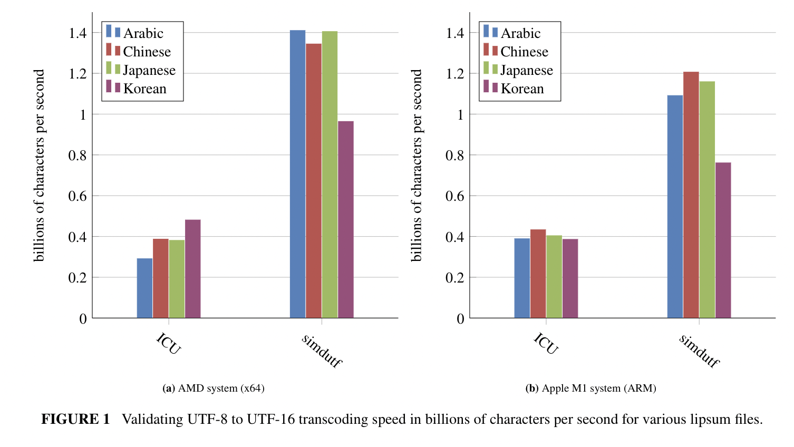
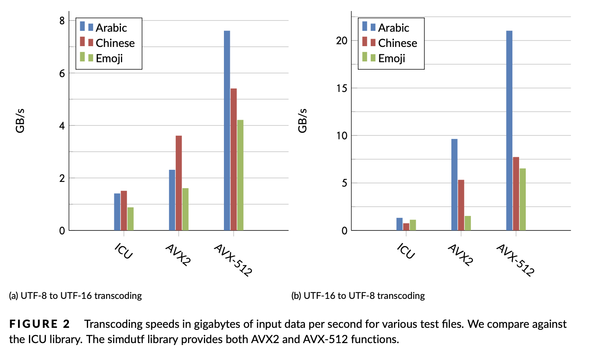

simdutf is a high-performance C++ library for Unicode validation, transcoding and base64 — accelerated with SIMD on every modern CPU. It powers Node.js, Bun, WebKit, Chromium, Cloudflare workerd and many more.
Validate and transcode between UTF-8, UTF-16, UTF-32, Latin1 and ASCII. Decode and encode WHATWG base64. Do it all at the speed of memory.
Validation
Verify ASCII, UTF-8, UTF-16LE/BE and UTF-32 with optional error positions. Refuse malformed input before it reaches your code.
Transcoding
Convert losslessly between every pair of UTF-8, UTF-16, UTF-32 and Latin1. With or without validation, with or without error reporting.
Base64
WHATWG-compliant forgiving-base64 decode and encode, both standard and URL-safe. Multi-gigabyte-per-second throughput.
SIMD everywhere
ARM NEON, SSE, AVX2, AVX-512, RISC-V Vector, LoongArch LASX, POWER VSX, s390x. Best kernel dispatched at runtime.
Small & safe
A few hundred kilobytes compiled. No allocations. No exceptions. noexcept across the public API. Drop into any codebase.
Battle-tested
Years in production at Node.js, WebKit, Chromium and Cloudflare. Continuously fuzzed. Exhaustive test suite. Apache 2.0 / MIT.
Show me the code
A minimal API, by design.
Every function takes a pointer and a length (or a std::span) and returns either a count or a structured result. You allocate; we transcode.
No globals. No allocations. No exceptions.
C++17, C++20 std::span overloads, and experimental constexpr in C++23. A separate C11 API is also available.
#include <simdutf.h>
#include <memory>
const char* utf8 = "Hello, 世界! 🌍";
size_t len = std::strlen(utf8);
// Validate first — never trust input.
if (!simdutf::validate_utf8(utf8, len)) return -1;
// Allocate just enough room for the UTF-16 output.
size_t need = simdutf::utf16_length_from_utf8(utf8, len);
std::unique_ptr<char16_t[]> utf16{new char16_t[need]};
// Transcode at GB/s.
size_t written = simdutf::convert_utf8_to_utf16le(
utf8, len, utf16.get());
// Round-trip back to UTF-8.
size_t back_need = simdutf::utf8_length_from_utf16le(
utf16.get(), written);
std::unique_ptr<char[]> round{new char[back_need]};
simdutf::convert_utf16le_to_utf8(
utf16.get(), written, round.get());
#include <simdutf.h>
// Quick check: valid UTF-8?
bool ok = simdutf::validate_utf8(buffer, length);
// Detailed check: where did it fail?
auto r = simdutf::validate_utf8_with_errors(buffer, length);
if (r.error != simdutf::error_code::SUCCESS) {
// r.count is the byte index of the error
std::cerr << "bad UTF-8 at byte " << r.count << '\n';
}
// Auto-detect the encoding of arbitrary bytes.
auto enc = simdutf::autodetect_encoding(data, size);
// enc is a bitmask of possible encodings
// (UTF8 | UTF16_LE | UTF16_BE | UTF32_LE | Latin1)
// Count Unicode code points without converting.
size_t chars = simdutf::count_utf8(buffer, length);
#include <simdutf.h>
#include <vector>
// --- Encode ---
std::vector<char> out(
simdutf::base64_length_from_binary(source.size()));
size_t n = simdutf::binary_to_base64(
source.data(), source.size(), out.data());
// --- Decode (WHATWG forgiving-base64) ---
std::vector<char> bin(
simdutf::maximal_binary_length_from_base64(
b64.data(), b64.size()));
auto r = simdutf::base64_to_binary(
b64.data(), b64.size(), bin.data());
if (r.error != simdutf::error_code::SUCCESS) {
// r.count is the offset of the offending character
}
// URL-safe variant too:
simdutf::binary_to_base64(
src, n, dst, simdutf::base64_url);
Benchmarks
Built for the throughput era.
Over realistic data — English, Chinese, Japanese, Arabic, emoji — simdutf transcodes at a billion characters per second or more. On AVX-512 hardware, multiple GB/s.

UTF-8 → UTF-16
Billions of characters per second across diverse scripts.
UTF-16 → UTF-8
Symmetric performance the other way round.

AVX-512 on Ice Lake
The fastest path lights up on modern Intel and AMD Zen 4+.
Decoding and Encoding becomes considerably faster than in Node.js 18. With the addition of simdutf for UTF-8 parsing, the observed benchmark results improved by 364% when decoding in comparison to Node.js 16.
— State of Node.js Performance 2023
Hardware support
Best path, every CPU.
simdutf picks the fastest kernel for the running CPU at startup. One binary, every uarch.
x86-64
Westmere · Haswell · Ice Lake (AVX-512)
ARM64
NEON (Apple Silicon, AWS Graviton, …)
ARMv7
NEON
RISC-V
RVV (rv64gcv and friends)
POWER
ppc64le · VSX
LoongArch
LSX · LASX
s390x
z/Architecture vector facility
Fallback
Portable scalar — runs anywhere
Get started
Drop it in. Ship faster.
Single-header amalgamation, CMake target, or your favorite package manager. Pick one and you're done.
Download the amalgamation from the releases page and compile against two files. Nothing else.